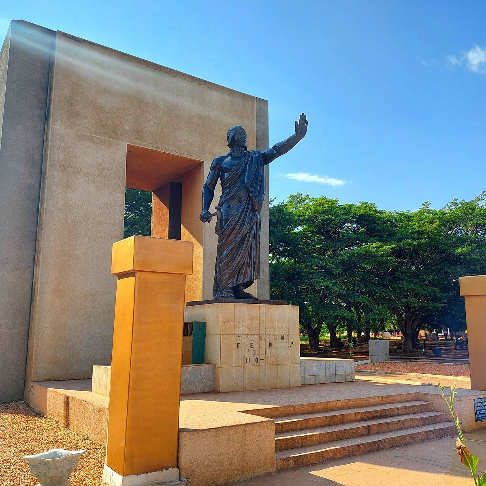
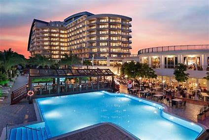

L'esplanade de 'Amazone est un point d'attraction et de rencontre. Le monument Amazone renvoie à un ancien régiment militaire entièrement féminin qui a existé jusqu'à la fin du XIXe siècle dans le royaume de Danxomè.
Il s'agit d'un corps créé sous le règne de Tassi Hangbé (de 1708 à 1711) et dénommé "Agoodjié" ou encore " minons ",puis restructuré par le roi Guézo.
L'hôtel dispose d'une réception ouverte 24 heures sur 24, d'une conciergerie et d'un service de chambre. De plus, l'Hotel Novelas Edwiner est doté d'un sauna et d'un salon, offrant un endroit plaisant pour se reposer après une journée bien remplie. Pour les clients avec véhicules, un parking gratuit est disponible.
Si vous aimez les restaurants de poissons et fruits de mer, poussez les portes du La Maree de Jaelle et Yasin qui sont tous situés non loin de l'Hotel Novelas Edwiner.
L'Hotel Novelas Edwiner vous offre le meilleur de Cotonou à votre portée, pour un séjour parfait en tous points.

PLACE GOHO
PLAGE FIDJLOSSE

TEST BD HOTEL
PARC PENDJARI